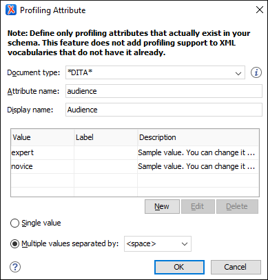

Creating and Editing Profiling Attributes
Oxygen XML Author includes support for defining your own profiling attributes, or modifying existing ones, for each particular document type (framework). You can then apply the profiling attributes to content in Author mode to see how the profiling will affect the output.
Create or Editing Profiling Attributes
- If you are creating a new attribute, make sure the attribute is already defined in the document DTD or schema before continuing with the procedure.
- Open the
Preferences dialog box and go to .Information: The Profiling Attributes section is used to define the attributes and their values for each document type.
-
To add new attributes and values, click the New button at the bottom of the Profiling Attributes table. To customize existing attributes and their values, select an attribute and click the Edit button.
Step Result: In either case, this opens a Profiling Attribute configuration dialog box where you can define attributes that exist in your schema.
Figure 1. Profiling Attribute Dialog Box The following options are available in this dialog box:- Document type
- Select the document type (framework).Tip: You can use the
*or?wildcards in this combo box. For example,DITA*would match any document type that starts with "DITA". You can also specify multiple document types by using commas to separate them. - Attribute name
- The name of the profiling attribute.
- Display name
- This optional field is used for descriptive rendering in profiling dialog boxes.
- Attribute Values Table
-
This table displays information about the values for the profiling attribute. You can configure them by using the buttons at the bottom of the table (New, Edit, Delete).
The columns are as follows:- Value - The attribute value.
- Label - You can specify a label for the attribute value that will be rendered as its name in various components in Author mode (Edit Profiling Attributes dialog box, Condition Set dialog box, and other UI components where the profiling is shown). If the Label is not specified, the Value will be used as its rendered name.
- Description - A description for the attribute value that will be displayed in this table.
- Single value
- Select this option if you want the attribute to only accept a single value.
- Multiple values separated by
- Select this option if you want the attribute to accept multiple values, and you can choose the type of delimiter to use. You can choose between space, comma, and semicolon, or you can enter a custom delimiter in the text field. A custom delimiter must be supported by the specified document type. For example, the DITA document type only accepts spaces as delimiters for attribute values.
- After defining or configuring the attributes and their values according to your needs, click OK to confirm your selections and close the Profiling Attributes configuration dialog box.
- Click Apply to save the changes.
Adding Profiling Attribute Values Directly in a Document

Sharing Profiling Attribute Configurations
Your profiling configuration can be shared with other users through a project file. If you select Project Options at the bottom of the Profiling/Conditional Text preferences page, your configuration is stored in the project file and can be shared with others. For instance, if your project file is saved on a version control system (such as SVN, CVS, or Source Safe) or in a shared folder, your team will have the same option configuration that you stored in the project file.
For more information about sharing project files, see Sharing a Project - Team Collaboration.